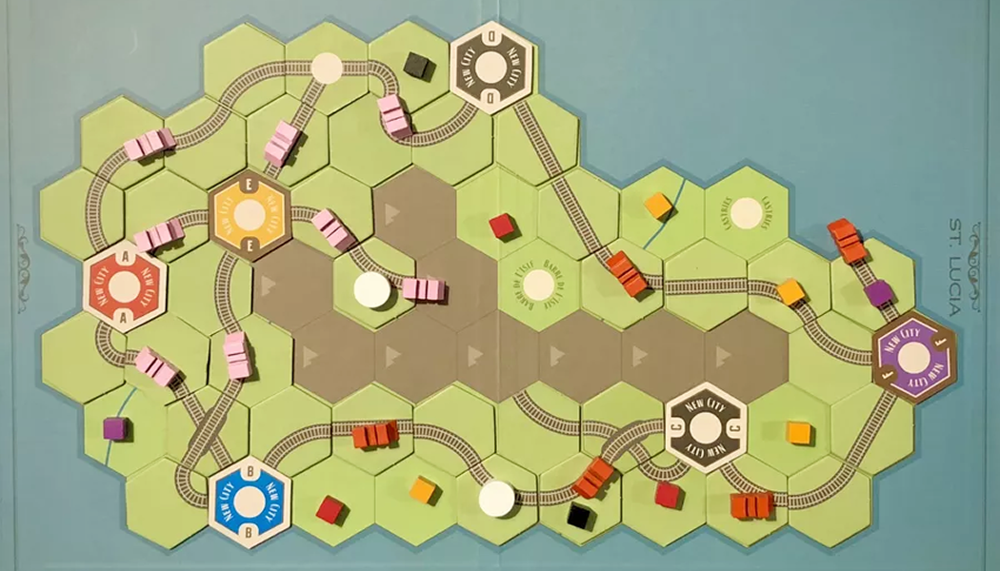
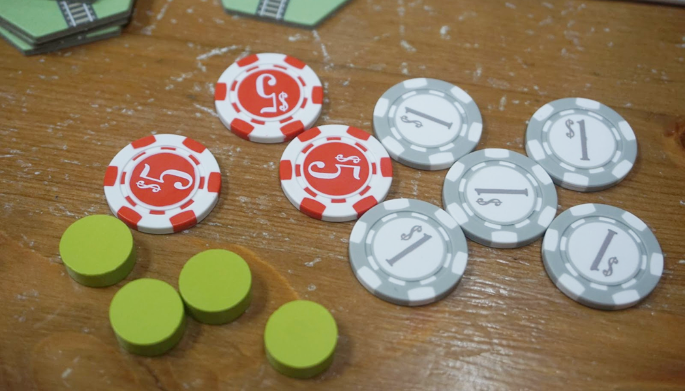

วิธีเล่น Age of Steam

Summary
ม้าเหล็กพ่นไอน้ำคำรามไปทั่วทุ่งราบอันกว้างใหญ่! ย้อนเวลากลับไปในยุคการบุกเบิกของรถไฟ เราต่างกันแข่งขันกันส่งสินค้าจากเมืองสู่อีกเมือง

Setup
บางอย่างจะมีการเปลี่ยนแปลงเมื่อเปลี่ยนแผนที่ Setup นี้เป็น Basic setup
บอร์ดกลาง
- วางไทล์แยกประเภทไว้
- วางไทล์เมืองแยกสีไว้
- เหรียญ เทา: 1$, แดง: 5$, น้ำเงิน: 25$
-
เอา Cube ใส่ถุง
- สุ่มวาง Cube (สีขาวใช้แค่บาง Expension) ไว้ที่ Goods Growth
- สุ่มวาง Cube 3 อันที่ Wheeling และเมืองที่เหลือจะวาง 2 อัน
- วาง Turn track ไว้ที่ Start
- ผู้เล่นแต่ละคนวาง Disk ที่ Display board ดังนี้
- Issued Shares
- Determine Player Order
- Select Actions
- Income Track ที่ 0
- Engine Track
- ได้เงินเริ่มต้น 10$

Gameplay
เกมจะมีทั้งหมด 10 เฟส เมื่อจบ 10 เฟสคือจบ 1 รอบ โดยจะเล่นจำนวนรอบตามจำนวนผู้เล่น ในแต่ละรอบจะประมูลเทิร์นออเดอร์แล้ววาง Action จากนั้นสร้างราง ส่งสินค้า รับ Income จ่ายหนี้ แล้วเริ่มรอบใหม่
Phase
I. Issue Share
Issue 1 share = 5$
หนี้อยู่มุมบนขวาของแต่ละช่อง ซึ่งจะจ่ายในเฟส Pay Expenses
II. Determine Player Order
ประมูลหาลำดับการเล่น โดยคนแรกจะประมูลก่อน เริ่มต้นที่ 1$ ลำดับถัดไปประมูลต่อ (ในตาแรกจะวนตามเข็มจากคนแรก) ซึ่งใครผ่านคนแรก จะไปอยู่ตำแหน่งสุดท้ายแต่ไม่ต้องจ่ายเงินค่าประมูล
ที่ 1 และ 2 จะต้องจ่ายเต็ม ที่ 3 หรือตรงกลางจะจ่ายครึ่งหนึ่ง ปัดขึ้น
III. Select Actions
เลือกทำ Actions ตามลำดับผู้เล่น
Locomotive จะได้เลื่อนในส่วน Engine Track 1 ช่องทันที
IV. Build Track
- สร้างรางได้สูงสุด 3 ราง โดยจะเริ่มสร้างจากลำดับผู้เล่นคนแรก ถ้ามีคนเลือก First Build จะได้สร้างก่อนแล้วค่อยเป็นผู้เล่นคนแรก
- ราคารางจะอยู่ใน Display board
- เมื่อวางรางให้เอา Disk ของตัวเองวางไว้บนรางที่สร้างเสร็จแล้วและยังไม่เสร็จ เพื่อบอกว่ารางนี้เป็นของใคร ซึ่งรางไหนที่ยังไม่เสร็จแล้วรอบหน้าไม่ได้มาสร้างต่อ จะต้องเอา Disk ออก (คนอื่นมาเคลมได้)
Engineer สร้างได้ 4 ราง
Urbanization วางเมืองบน Town ก่อนแล้วสร้างราง
รางสามารถสร้างออกจากเมืองไหนก็ได้ หรือ รางของตัวเองที่ยังไม่เสร็จ
ใช้รางธรรมดาทำเป็น Town ได้ โดยใช้แท่งขาววางลงไป จ่ายราคาเหมือนรางเมือง
V. Move Goods
ผู้เล่นทุกคนจะได้ทำ 2 ครั้ง โดยจะทำหรือไม่ทำก็ได้
อัปเกรดได้ครั้งเดียว แต่ส่งสินค้าได้ 2 ครั้ง
- เลือกว่าจะอัปเกรด Link หรือ ส่งสินค้า
- ส่งสินค้าโดยสี Cube กับสีเมืองต้องเหมือนกัน ถ้าไหลมาเจอสีเดียวกันถือว่าจบการส่ง
- เมื่อส่งแล้วได้ขึ้น Income ตามจำนวนการผ่านเมือง เช่น ผ่าน 2 เมือง ได้ขึ้น 2 Income
1 Link = ผ่านได้ 1 เมือง (ไม่นับจุดเริ่ม)
VI. Collect Income
ได้เงินโดนดูที่ Income track
VII. Pay Expenses
จ่ายหนี้จากค่า Issue Share + จำนวน Link ถ้าเงินขาดจะต้องลด Income 1
ถ้าลด Income ไม่ได้แล้วจะถือว่าล้มละลาย ออกจากเกมทันที
VIII. Income Reduction
ลด Income ตามช่องเทาๆ ข้างหน้า เช่นถ้าได้ 11- 20 จะโดนลบ 2 Income
IX. Goods Growth
เติมสินค้าไปยังเมืองต่างๆ โดยทำด้านสว่างก่อนแล้วค่อยทำด้านมืด
- ทอยเต๋าเท่ากับจำนวนผู้เล่น (นับคนที่ล้มละลาย) เต๋า 1 ลูก แทนสินค้า 1 ชิ้น
- หยิบสินค้าโดยดูคอลัมน์ที่ตรงกับเลขที่ทอย แล้วเอาไปวางในเมืองที่เลขเดียวกัน
- ถ้ามีคอลัมน์ตัวอักษรด้านล่างให้เอาไปวางเมืองที่ตรงกับตัวอักษร (ถ้าไม่มีไม่ต้องวาง)
- ทำใหม่อีกครั้งแต่หยิบจากด้านมืด
Production ให้สุ่มหยิบสินค้า 2 อันวางที่ไหนก็ได้ที่เป็นที่ว่าง
X. Advance Turn Marker
เลื่อนรอบขึ้นไป 1 รอบ

Endgame & Scoring
Turn marker มาถึงรอบสุดท้าย เล่นจนจบรอบนั้นแล้วจบเกม
Scoring
3 แต้ม / Income track
-3 แต้ม / Issue share
1 แต้มต่อรางที่ Complete (เมือง - เมือง)
( (Income - Issue share) x 3 ) + แต้มจากราง
Explore more

วิธีเล่น Puerto Rico 1897
เกม Puerto Rico 1897 มีธีมเกี่ยวกับการพัฒนาเศรษฐกิจและการค้าในช่วงปลายศตวรรษที่ 19 บนเกาะเปอร์โตริโก ซึ่งขณะนั้นอยู่ภายใต้การปกครองของสเปน แต่กำลังเข้าสู่ช่วงเปลี่ยนผ่านสู่ความเป็นอิสระ ผู้เล่นรับบทเป็นชาวเมืองที่พยายามสร้างความเจริญให้กับเกาะของตนเองผ่านการปลูกพืชผลสำคัญ เช่น ข้าวโพด น้ำตาล กาแฟ ยาสูบ และคราม เพื่อนำไปค้าขายและพัฒนาเมือง

1862: Railway Mania in the Eastern Counties
1862: Railway Mania in the Eastern Counties เป็นเกม 18xx ระดับหนักที่รวมความสนุกของการบริหารบริษัท การวางแผนการควบรวม และระบบใหม่ๆ เช่น Permit และ Parliament Round ซึ่งช่วยเพิ่มความหลากหลายและกลยุทธ์ให้กับเกม แม้จะตัดระบบ Private Company ออกไป แต่รับรองว่ายังอัดแน่นด้วยความท้าทายและการชิงไหวชิงพริบที่เข้มข้น